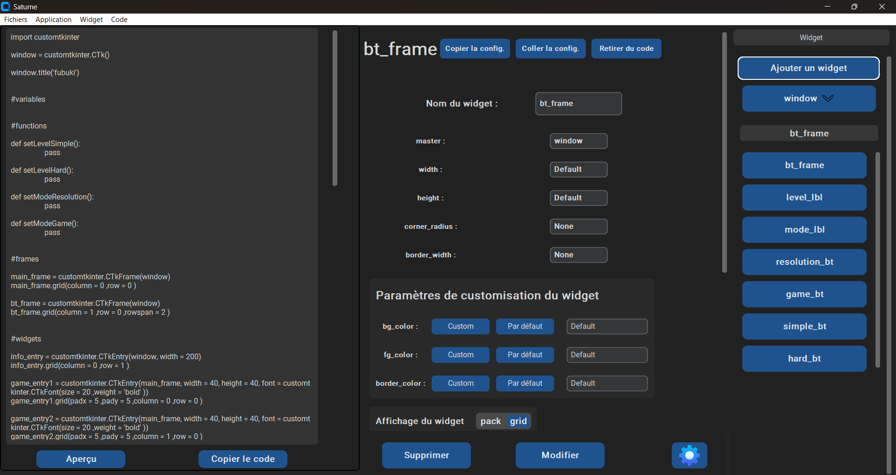
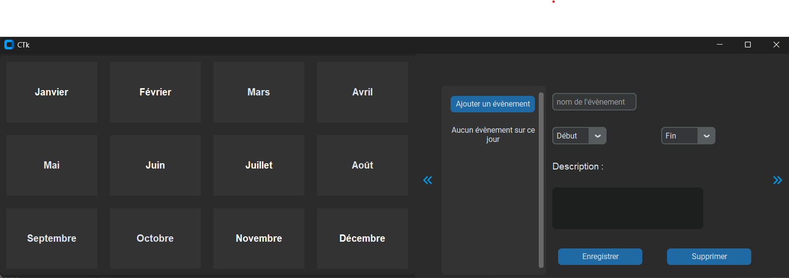

Saturne
Saturne est une application de génération de code, orientée sur la création d'interfaces.
Elle vient du projet créé pour le concours des trophées NSI, sur lequel j'ai continué le développement.
le code est découpé entre des fichiers d'interfaces, des fichiers de traitement des données,
et des fichiers de gestion de fichiers ressources.
L'application est passée par une phase de réflexion/conception, puis par une phase de développement, et enfin
par une phase de débugage/polissage
Technologies : Python, JSON
Compétences : Développement logiciel, développement python, travail d'équipe, gestion de projets

CTkCalendar
Création d'un widget calendrier pour la librairie CustomTkinter. Le Widget peut être seul ou accompagné d'une fenêtre d'ajout d'évènements et il est pleinement compatible avec les interfaces CustomTkinter.
technologie : Python
Compétences : Développement python, développement logiciel, Librairie Tkinter et CustomTkinter

Graph App
Réalisation d'une application de génération de graphs. Le graph est créé par l'utilisateur en entrant le nom des sommets, la matrice d'adjacence et les éventuels poids sur chaque arrête.
Technologie : Python
Compétences : Théorie des Graphs, développement python, développement logiciel

EllaDanse
Développement d'une application de gestion d'un club de danse.
Nous avons développé en équipe la partie sur la gestion des membres dans cette application.
Nous avons étudié le besoin client, fait l'organigramme des tâches ainsi que la matrice RACI et le diagramme de Gantt.
Nous avons enfin développé l'application en JAVA avec la librairie JavaFX.
Note : l'application étant encore en développement, elle n'est pas disponible encore sur github
Technologies : JAVA, JavaFX
Compétences : Développement Java, développement logiciel, travail en équipe, gestion de projets